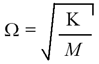

Modal analysis
Modal analysis:
-
Calculates natural frequencies and the corresponding mode shapes.
-
Does not consider damping.

How stiffness and mass affect natural frequency
For a single DOF system, the natural frequency is related to the mass (M) and stiffness (K) as follows:
